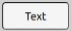
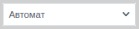

Мнемосхемы
## Типовые элементы мнемосхем Состав и вид мнемосхем определяется разработчиками на этапе проектирования в Studio. Внешний вид элементов мнемосхем и принцип их функционирования может быть скорректирован разработчиками прикладного проекта и отличаться от используемого по умолчанию. Типовые элементы мнемосхем включают:

Поле вывода служит для отображения текстовой/числовой информации, например, названий линий и объектов, может быть результатом измерений, таких как температура, давление или скорость. Значение обновляется в режиме реального времени.
Свойство значения: Связывается с переменной, которая содержит текущее значение параметра.
Единицы измерения: Необходимо установить единицу, в которой будет отображаться значение, например, °C, бар, м/с и т.д.
Цвет фона/шрифта: Настраивается для изменения цвета в зависимости от диапазонов значений (например, красный для аварийных значений).
Шрифт: Можно настроить размер и стиль шрифта для удобного чтения.
Обновление: Обновляется в режиме реального времени или по заданному интервалу.
Поле ввода-вывода (Input-Output Field):

Этот элемент используется как для отображения, так и для ввода новых значений параметров, например уставок, технологических пределов и т. д.
Основные свойства:
Свойство значения: Связывается с переменной, которая может принимать новое значение.
Диапазон значений: Настраивается диапазон допустимых значений для ввода.
Тип данных: Можно указать тип данных, например, целое или с плавающей точкой.
Подтверждение ввода: Настраивается действие для подтверждения ввода (например, клавиша Enter или кнопка OK).
Обработка ошибок: Включение механизмов валидации для проверки корректности введенных данных.
Кнопка (Button):
Элемент используется для инициирования команды, например включения или отключения оборудования. Наиболее часто кнопки используются для приема команд оператора, например включение технологического агрегата. Подача команды осуществляется щелчком по кнопке. В определенных случаях могут использоваться другие события, например щелчок правой кнопкой мыши, отпускание кнопки и т.д. Конфигурируется разработчиками на этапе проектирования в Studio.
Основные свойства:
Свойство события: Связывается с переменной или командой, которая активируется при нажатии кнопки.
Цвет и состояние: Кнопка может менять цвет в зависимости от состояния (активна или неактивна, нажата или не нажата).
Подпись/Текст: Можно настроить текст на кнопке, например "Включить", "Отключить".
Анимация нажатия: Можно настроить визуальные эффекты нажатия для более интуитивного управления.
Чекбокс (Checkbox):

Используется для включения или выключения функций, таких как контроль пределов параметра. Наиболее часто чекбокс используется для изменения каких-либо настроек включения/выключения каких-то функций, например контроль границ технологических коридоров.
Основные свойства:
Свойство значения: Связывается с булевской переменной, которая изменяется при установке или снятии галочки.
Подпись: Текст рядом с чекбоксом, описывающий его назначение (например, "Включить контроль пределов").
Цветовое изменение: Можно настроить изменение цвета в зависимости от состояния (включено/выключено).
Индикатор сообщений (Message Indicator):

Этот элемент используется для индикации тревожных и предупреждающих сообщений.
Основные свойства:
Состояние: Связывается с переменной, которая отображает наличие сообщения (ошибка, тревога, предупреждение).
Цветовая индикация: Цвет индикатора меняется в зависимости от приоритета сообщения (красный - тревога, желтый - предупреждение, черный - ошибка).
Мигание: Настраивается мигание индикатора до квитирования сообщения оператором.
При появлении сообщения, элемент появляется и мигает пока сообщение не будет квитировано оператором. После квитирования сообщения элемент перестает мигать, но продолжает отображаться пока событие вызвавшее сообщение не уйдет. Внешность элемента меняется в зависимости от типа сообщения:
| Ошибка |
|---|---|
Тревога | |
Предупреждение |
Если по компоненту имеется несколько сообщений, то элемент принимает вид в соответствии с сообщением имеющим наибольший приоритет: (error, alarm, warning - по убыванию). Неквитириованные сообщения имеют более высокий приоритет, чем квитированные. Это означает, что если по компоненту имеются одновременно сообщения типа error и warning, но сообщение error уже квитировано, то элемент будет мигать и иметь тип warning, несмотря на то, что error имеет более высокий приоритет.
Выпадающий список:

Позволяет оператору выбирать значение из нескольких предложенных вариантов. Это может быть переключение режима работы, изменение источника уставки, выбор рецепта или технологической карты и т.д.
Основные свойства:
Список вариантов: Задается набор значений для выбора.
Свойство значения: Связывается с переменной, которая изменяется при выборе оператора.
Подпись: Можно добавить описание списка, например, "Выберите режим работы".
Цвет и стиль: Настраиваются цвета элементов списка.
Моделирование (Simulation):
Элемент, предназначенный для воспроизведения симуляции процессов или объектов.
Основные свойства:
Состояния объектов: Устанавливаются различные состояния для моделируемых объектов.
Время симуляции: Настраивается длительность симуляции и интервал обновления данных.
Отображение анимации: Можно настроить анимации, отображающие процессы в динамике.
Работа с диспетчерскими щитами
Схема диспетчерского щита создается на основе нормальной схемы электрических соединений объектов, которые входят в операционную зону диспетчерского центра (ДЦ). Диспетчерский щит обеспечивает контроль ключевых параметров электроэнергетического режима и возможность наблюдать за изменениями в топологии электрической сети.
Схема отображается в виде упрощенной коммутационной схемы, показывающей состояние оборудования и соединений. Например, коммутационные аппараты и их состояние (включен/отключен) упрощенно представляются в виде последовательности соединений. Соединительные линии между объектами изображаются с минимальным количеством изломов, а толщина линий зависит от класса напряжения.
Диспетчерский щит имеет несколько слоев, позволяющих настраивать видимость информации, например:
Границы энергорайонов,
Линии разных классов напряжения (500, 220, 110, 35 кВ),
Аварийно-предупредительная сигнализация,
Показатели реактивной мощности,
Оценка состояния оборудования.
Открыть диспетчерский щит можно, как было показано в п. 3.1.
При клике на правую кнопку мыши на элемент линии электропередачи открывается дополнительное окно, где можно узнать ключевую информацию об объекте, телеметрии и состоянии, а также паспортные данные:
Рисунок 4.
Основные элементы диспетчерского щита
Выключатель
Нажатие левой кнопки мыши открывает панель:

В верхнем левом углу можно увидеть текущий статус и время, когда этот статус был изменен. Также можно наблюдать текущую позицию и какую команду задал оператор
В меню control mode можно изменить режим и, таким образом, подать команду на включение или отключение выключателя (команда имеет информативный характер и подает команду только для оператора).
Нажатие ПКМ открывает меню settings, в котором мы можем ознакомиться с привязкой полей I и J (нужны для работы графого движка), а также state (положение) и voltage class (класс напряжения).

Нажатие на qcode открывает панель для state, в котором оператор может перевести режим с автоматического на ручной, а также задать определенный qcode. Дата в самом низу осведомляет оператора, какое изменение qcode было последним (входящее значение qcode или оператор изменил это значение)

Разъединитель
У разъединителя такие же панели:


Заземляющий нож
Такие же панели как у Выключателя и Изолятора, за исключением того, что у заземляющего ножа только одно поле I

Line terminal
ЛКМ:

ПКМ:
Bus terminal
Нажатие ПКМ по телеметрии данной шины приводит к появлению вот такого окна:

Voltage transformer
ПКМ:
Трехобмоточный транфсформатор (автотрансформатор)
ПКМ (в этих панелях есть поле K – подключение к первой обмотке, J- второй, I - третьей):